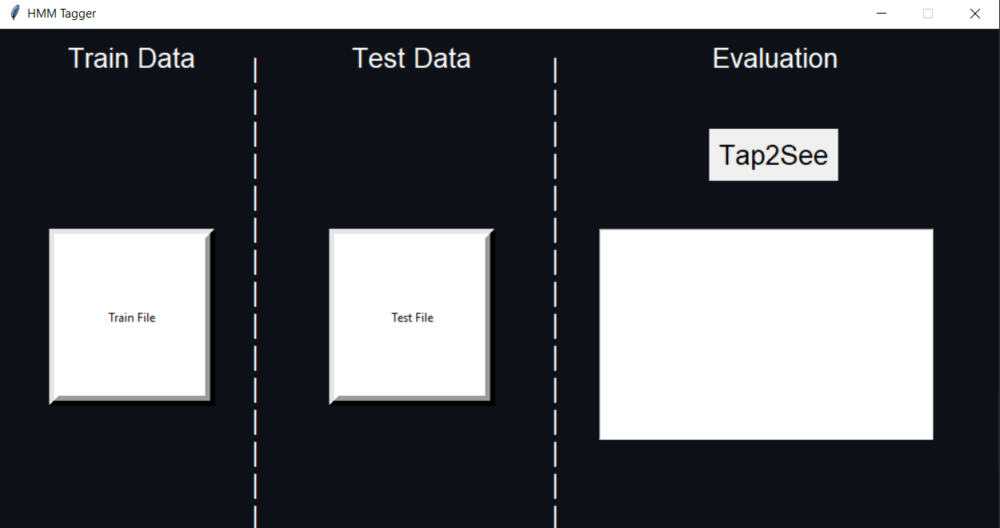
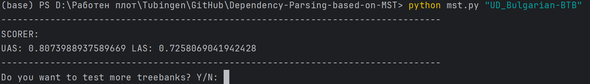

Description
1. Given two valid .conllu files, you can perform Sequence Classification with a high
degree of accuracy.
2. The Baseline Model is based on the assumption that the correct tag is this, with highest frequency
in the train data.
3. A Hidden Markov Model is trained on the words and POS Tags distribution , and then using
Viterbi decoding the most probable sequence of tags is predicted,
outperforming our Baseline.

Description
1. Encoder-Decoder architecture based on GRUs for generating words in Tatar, given lemma and
inflections.
2. Command-line interface, with a possibility of a pretty-print, that is, what the model has generated.
3. Evaluation based on the TER score and the minimum edit distance between the target and predicted
words.

Description
1. Command-line interface.
2. Graded university assignment, in top 3 of the best scores on average for all datasets in the
latest UD release.
3. High efficiency, simple and fast count model based on linguistic knowledge.
4. Uses Maximum Spanning Tree algorithm to get the best possible parse. The sentences are represented
as directed graphs.
5. Evaluation is done from computing the UAS (correct heads) and LAS (correct heads and
labels).